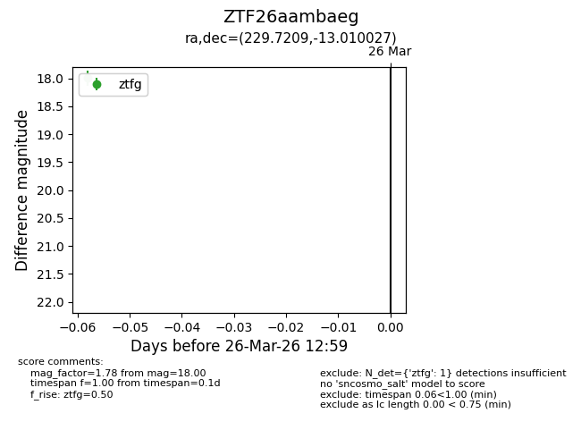
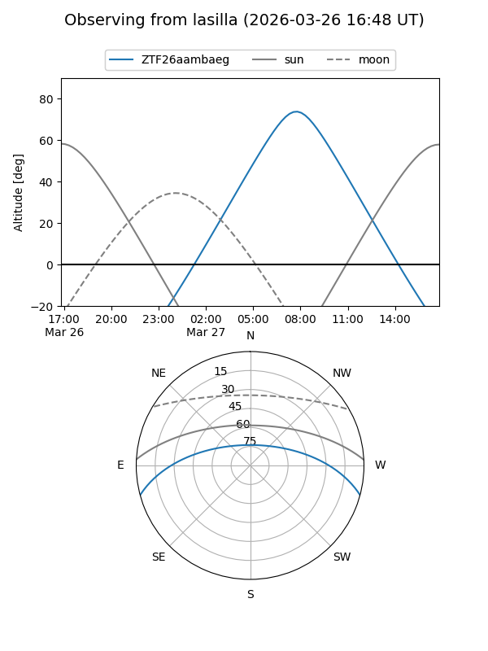
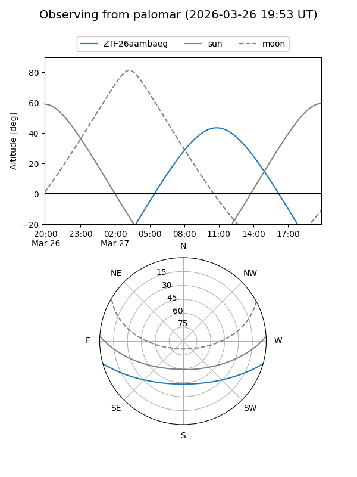

ZTF26aambaeg
Target ZTF26aambaeg at 2026-03-26 13:01
Aliases and brokers:
FINK: link
Lasair: link
ALeRCE: link
alt names
ZTF26aambaeg (ztf,fink_ztf)
Coordinates:
equatorial (ra, dec) = 229.7209,-13.01003
equatorial (HMS+DMS) = 15:18:53.03,-13:00:36.10
galactic (l, b) = (349.3720,+36.23787)
Flags:
Photometry:
last ztfg=18.00
1 ztfg detections
Lightcurve

Visibility


Additional plots